Introduction to Computer Science Through Programming
Smith Computer Science
Lecture Notes 06: Intro to Functions
Recap and Catch-up: Strings
We will finish the activities from the previous lecture if we did not finish then.
Execution Control Flow
When a program gets executed, it is executed one statement at a time.
One seemingly dumb question one could ask is: which one comes next?
An example with music
The execution of a piece of classical music depends on many things:
The piece
The arrangement
The conductor
The number of musicians
The instruments
So, let's say that we are talking about something like this:
So, that the musician and conductor is the same, and they follow sheet music that looks like this:
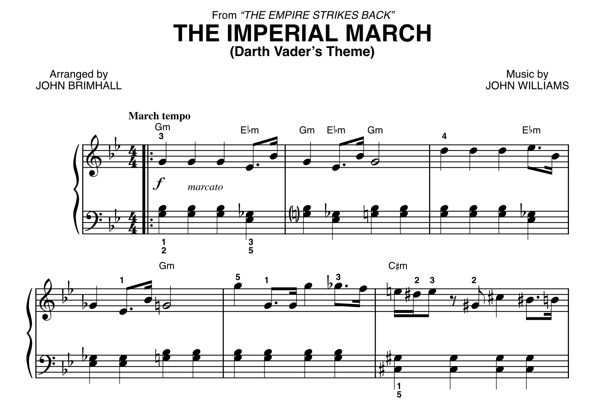
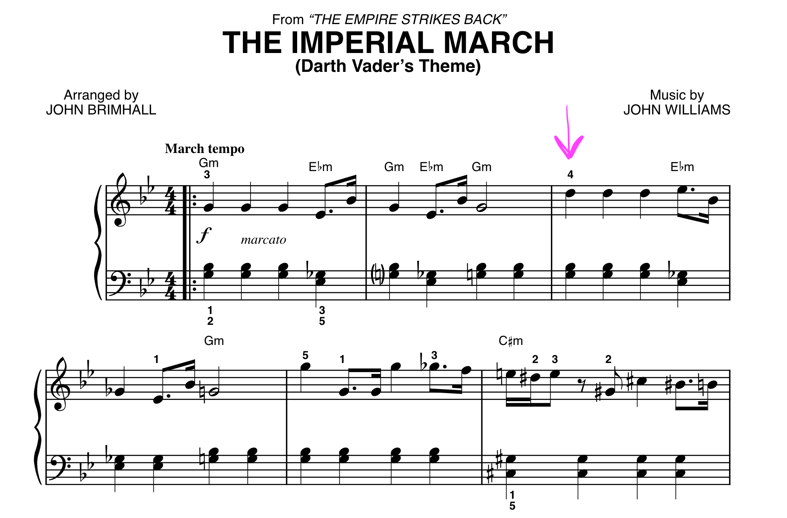
Pretty easy.
Now imagine that the context is this one:
(And there are many musicians and one conductor)
Also, the sheet music might be different for each instrument!!!
How could this ever work!
One possible solution (not necessarily how it is actually done) is the following:
(Look at the image below)
Despite each instrument being capable of playing many different tunes (don't hover over image),
we could pick a specific tune for each instrument and let it know when to execute it (hover over image).
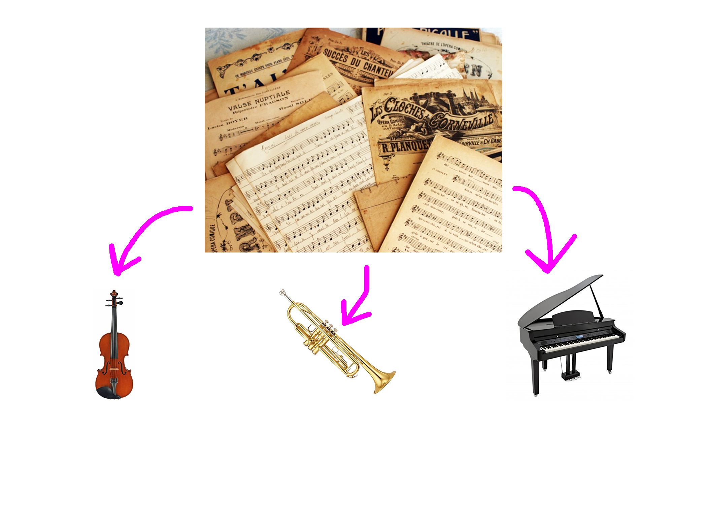
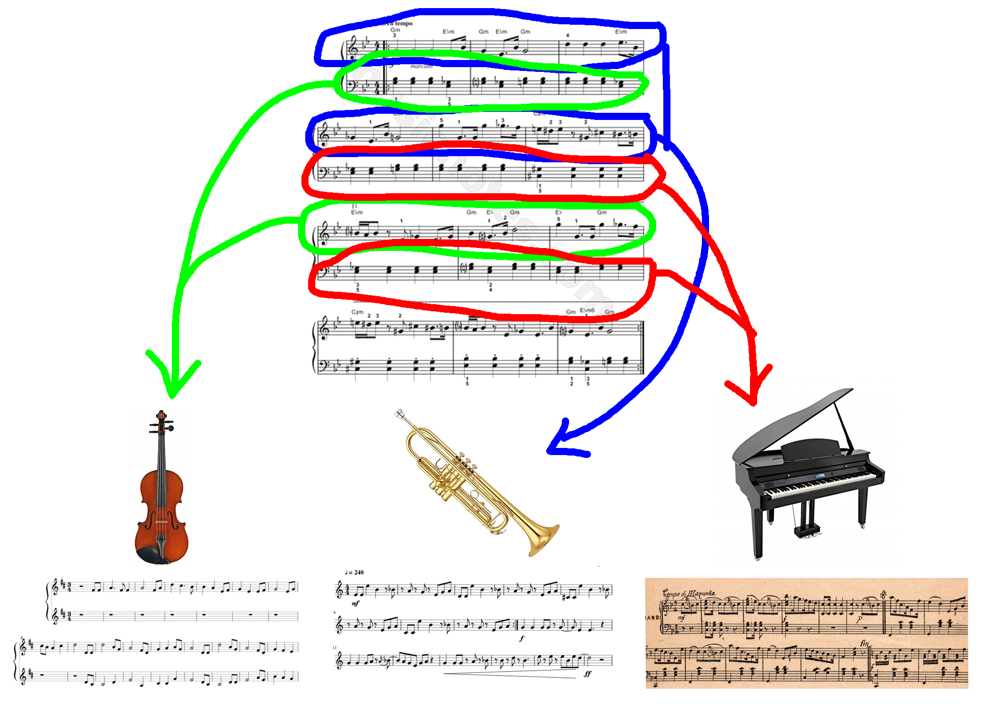
If the Sheet music that the Conductor is reading indicates that it is the violin's turn,
She points to the violin section:
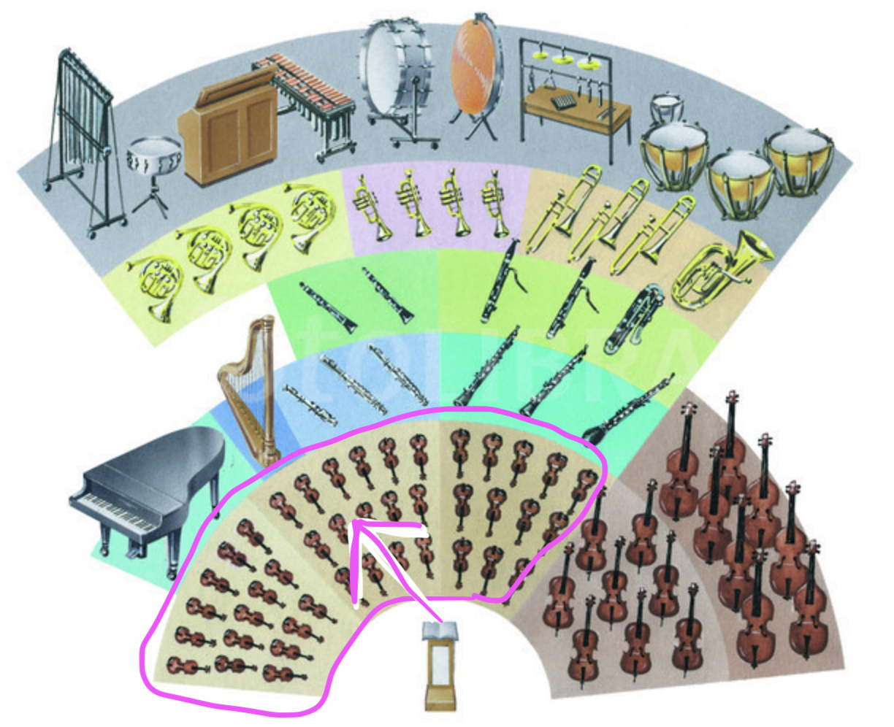
And they do their bit.
If the Sheet music that the Conductor is reading indicates that it is the trumpet's turn,
She points to the trumpet section:
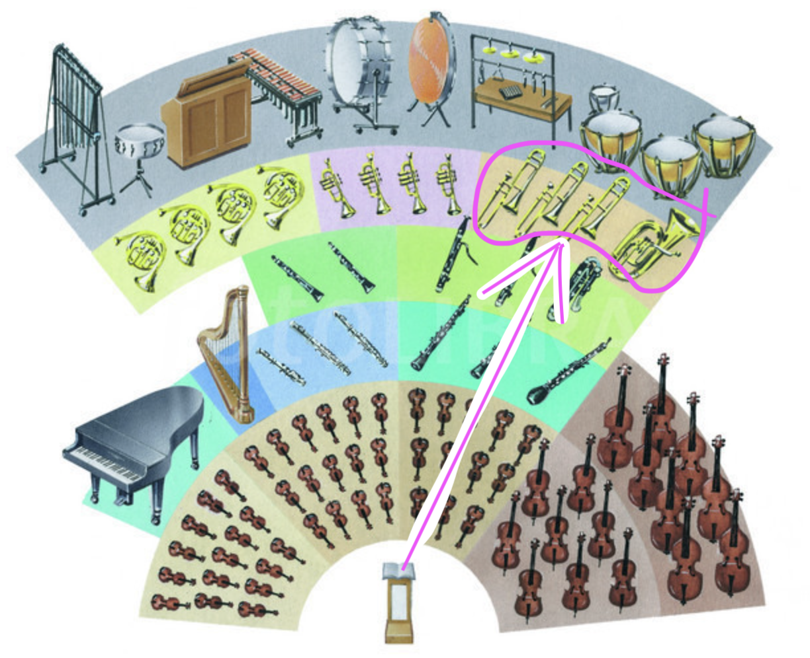
And they do their bit.
If the Sheet music that the Conductor is reading indicates that it is the piano's turn,
She points to the piano section:
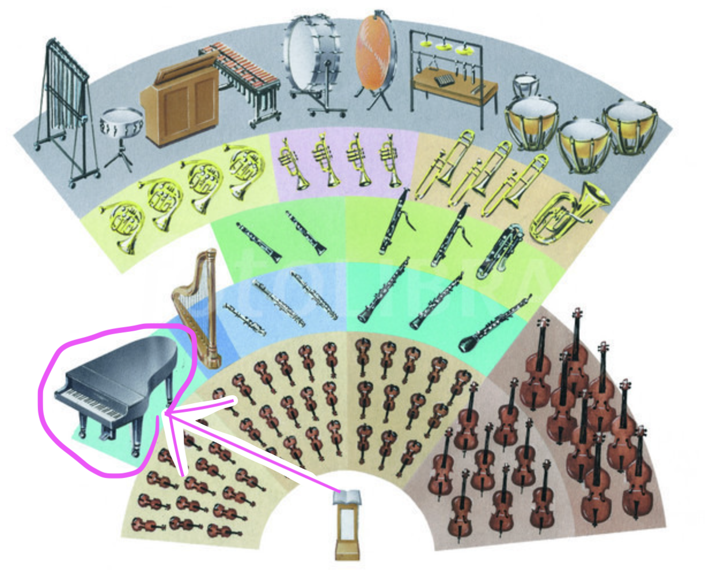
And they do their bit.
As an audience member, you would simply hear a sequence o tunes played by some sequence of instruments (in reality you might have simultaneous instruments playing, but let's keep the analogy simple).
However, in practice, the flow of execution is going from one location to another!
What does this look like for a program?
(I'm glad you asked)
"Single person version"
If a single person playing notes in a straight sequence looks like this:
\[A, A, A, F, C, A, F, C, A, ... E, E, E, F, C, G, F, C, A\]
You may open and run the program: Functions Example 02 in Replit
Here, there are Two types of code blocks:
The "sheet music" code blocks:
the sequence of statements to execute IF that part is called upon
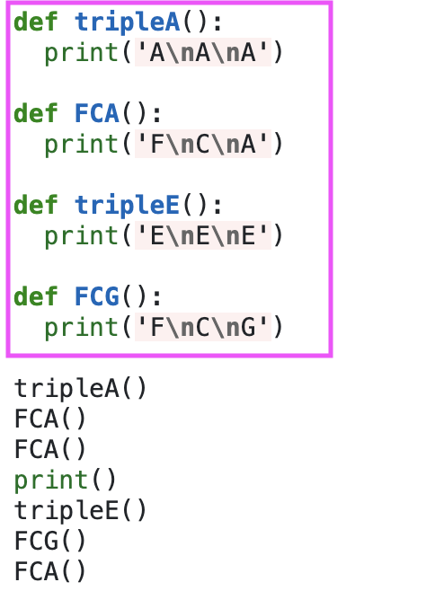
and
The "Conductor conducting" code section: which is the sequence of instructions carried out
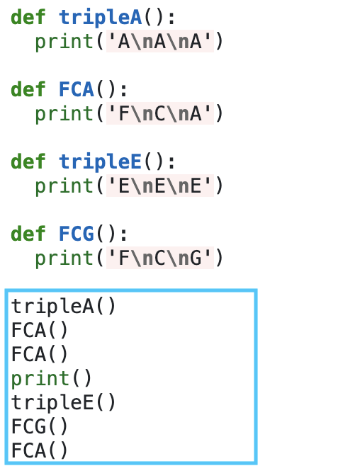
THIS is where it gets good...
Activity 1 [2 minutes]:
How is it that we get the same result?
Can somebody venture a guess at what is the sequence followed in the control flow?
(just tell me the sequence of line numbers that is executed in the following image)
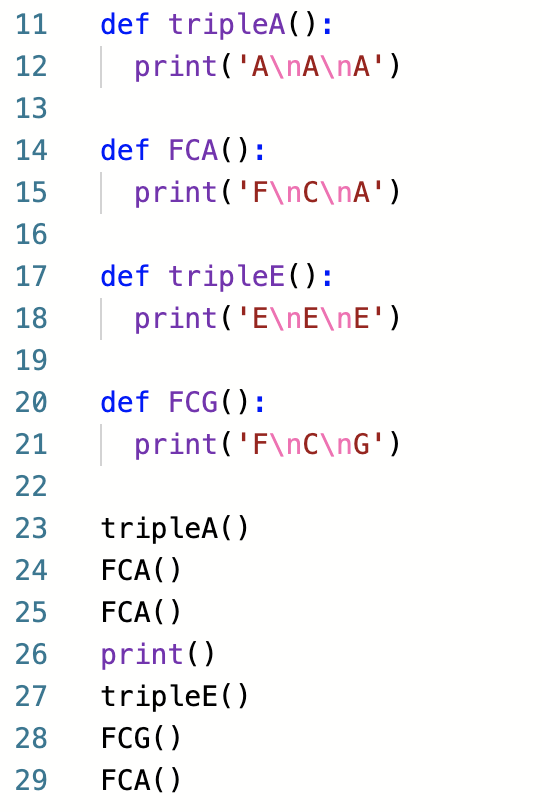
Enter the password to proceed:
Definitions
11-12
14-15
17-18
20-21
Actions
23
(11)-12
24
(14)-15
25
(14)-15
26
27
(17)-18
28
(20)-21
29
(14)-15
Functions: Motivation
Answer the following questions:
Activity 2 [2 minutes]:
Why go through the trouble of doing all of this?
What possible benefit could we get by using these "functions"?
(Wait; then Click)
Reuse: Avoid unnecessary repetition
Reduce: Modular structure, better organization
Recycle: Use functions that you created a while ago for something you need now!
Ok. Let's say you buy this.
How do we actually make and use these functions?
Functions: API for Built-in functions
We use built-in functions depending how they were constructed.
We know hoe to use a thing whe it is intuitive OR when it comes with instructions!
The instructions for using built-in functions for programming an application is called the Application Programming Interface, or API.
For example, the info for the eval function will have a way of using it:
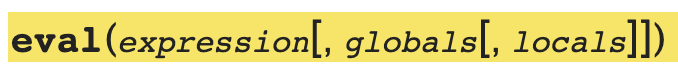
Note that the things in brackets are optional parameters (you can choose to add them if you need them).
As an example of how to read the input, is with the round function, indicated like this:
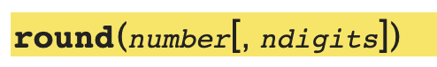
Where one can use it with:
round(2.672) # which will round up to 3; or, with
round(2.672, 2) # which will round down to 2.67
The description also indicates what the function returns if anything at all
Before proceeding: Indentation in Python
Indentation means something in python.
A piece of code indented with respect to the previous line means "this code block is inside the previous block header".
this is like when we use parenthesis to group operations in arithmetic;
In the following example:
\[ z = 3*( 9 + 8/( 4 ) - 5 ) \]
In this example, we could group the operations like this:
\[
z = \underbrace{3 * (\overbrace{
9 +
\underbrace{8/4}_\text{this first}
+
5
}^\text{add 3 elements}) }_\text{Multiply}
\]
In Python, indentation indicates the begining and end of a section block.
It is structured like a piece of text where you indent once every time you start a new section or sub-section:
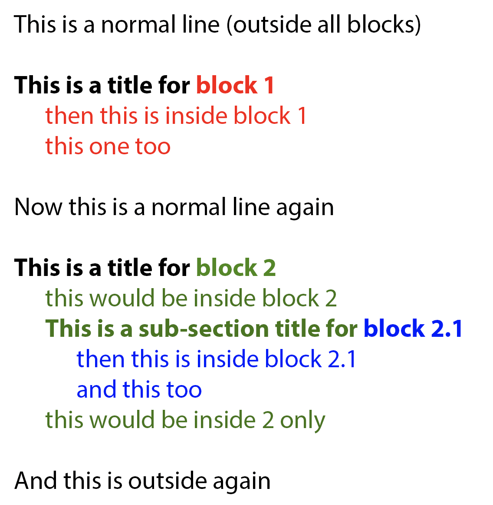
Functions: How to make them?
We called the ones you make "User-defined" functions.
We follow some rules to make a function:
use the def keyword to let the interpreter know that what follows is a function definition (it doesn't matter where the def goes as long as it is defined above where it is invoked)
when the Python interpreter encounters the def (or class) keywords, it only stores those definitions for later use and doesn’t actually execute them until you tell it to